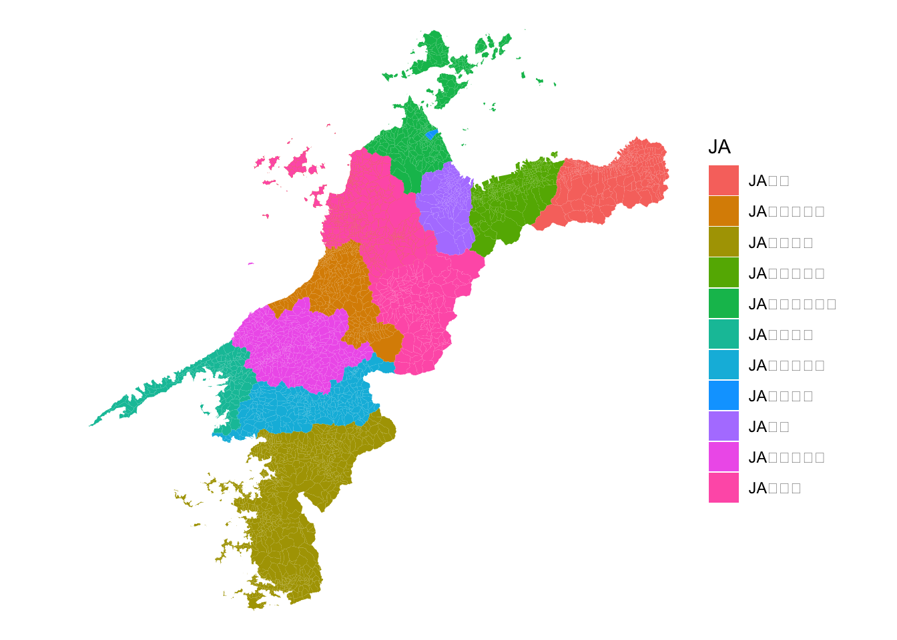
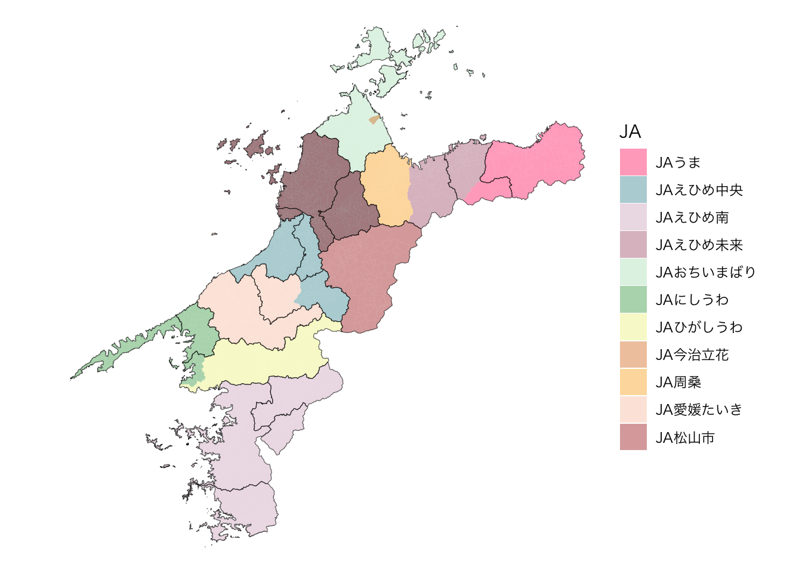

install.packages("fude")
install.packages("dplyr")
install.packages("tidyr")
install.packages("ggplot2")
install.packages("paletteer")愛媛県のJA
ここでは，愛媛県における農業協同組合（JA）の活動範囲を地図上に可視化し，その分布を視覚的に把握することを目的とします。
本ページでは，愛媛県内のJAのうち総合農協のみを対象とします。 2026年時点では，愛媛県内に総合農協は11存在します。 以下では，これら11の総合農協をまとめて「JA」と呼びます。
各JAの管内（担当区域）については，次のウェブページに整理されています。
ノートJAグループ 愛媛県 管内の郡市町村名
1 パッケージのインストール（初回のみ）
使用するパッケージは，あらかじめパソコンにインストールしておく必要があります。 はじめて実行する場合のみ，次のコードを実行してください（2回目以降は不要です）。
2 パッケージの読み込み
インストールしたパッケージを読み込みます。 以下のコードは，R を起動するたびに毎回実行する必要があります。
library(fude)
library(dplyr)
library(tidyr)
library(ggplot2)
library(paletteer)3 データの準備
地名（市町名・旧市町村名・農業集落名）と対応する地図データを準備します。 次のコードを実行すると，地図データが自動的にダウンロードされ，Rに読み込まれます。
b <- get_boundary("愛媛")ダウンロードされるデータは，以下のウェブページで公開されている愛媛県の農業集落境界データです。
実行後，R の作業ディレクトリに MA0001_2020_2020_38.zip というファイルが保存され，同時にRへ読み込まれます。
このファイルは一度ダウンロードすれば再利用できます。 そのため，すでに作業ディレクトリにファイルがダウンロードされている場合は，ダウンロードは自動でスキップします。
4 データの整理
R 上のオブジェクト b には，どの地域がどのJAの管内に属するかという情報は含まれていません。 そこで，JAグループのウェブページに掲載されている情報をもとに，各地域がどのJAの管内に属するのかを整理します。
ここで注意したいのは，松山市，東温市，松前町が2つのJAの管内にまたがっていることです。 このため，オブジェクト b に JA という1つの列を追加して，そこへJA名を入力する方法は使えません。
そこで，JAごとに列を1つずつ作成し，その地域がそのJAの管内であれば 1，そうでなければ 0 を入力する形でデータを整理します。
b[[1]] <- b[[1]] |>
mutate(
JAうま = case_when(
city_name == "四国中央市" ~ 1,
city_name == "新居浜市" & kcity_name == "別子山村" ~ 1,
TRUE ~ 0
)
) |>
mutate(
JAえひめ中央 = case_when(
city_name == "松山市" ~ 1,
city_name == "伊予市" ~ 1,
city_name == "東温市" ~ 1,
city_name == "内子町" & grepl("参川村|小田町村|田渡村", kcity_name) ~ 1,
city_name == "松前町" ~ 1,
city_name == "砥部町" ~ 1,
TRUE ~ 0
)
) |>
mutate(
JAえひめ南 = case_when(
city_name == "宇和島市" ~ 1,
city_name == "鬼北町" ~ 1,
city_name == "松野町" ~ 1,
city_name == "愛南町" ~ 1,
TRUE ~ 0
)
) |>
mutate(
JAえひめ未来 = case_when(
city_name == "新居浜市" & !grepl("別子山村", kcity_name) ~ 1,
city_name == "西条市" & !grepl("壬生川村|壬生川町|周布村|吉井村|国安村|吉岡村|三芳村|庄内村|楠河村|小松町|石鎚村|石根村|丹原町|徳田村|田野村|中川村|桜樹村", kcity_name) ~ 1,
TRUE ~ 0
)
) |>
mutate(
JAおちいまばり = case_when(
city_name == "今治市" ~ 1,
city_name == "今治市" & kcity_name == "今治市" & grepl("鳥生|郷|八丁", rcom_name) ~ 0,
city_name == "上島町" ~ 1,
TRUE ~ 0
)
) |>
mutate(
JAにしうわ = case_when(
city_name == "八幡浜市" ~ 1,
city_name == "西予市" & grepl("三瓶|二木生|三島|双岩", kcity_name) ~ 1,
city_name == "伊方町" ~ 1,
TRUE ~ 0
)
) |>
mutate(
JAひがしうわ = case_when(
city_name == "西予市" & !grepl("三瓶|二木生|三島|双岩", kcity_name) ~ 1,
TRUE ~ 0
)
) |>
mutate(
JA今治立花 = case_when(
city_name == "今治市" & kcity_name == "今治市" & grepl("鳥生|郷|八丁", rcom_name) ~ 1,
TRUE ~ 0
)
) |>
mutate(
JA周桑 = case_when(
city_name == "西条市" & grepl("壬生川村|壬生川町|周布村|吉井村|国安村|吉岡村|三芳村|庄内村|楠河村|小松町|石鎚村|石根村|丹原町|徳田村|田野村|中川村|桜樹村", kcity_name) ~ 1,
TRUE ~ 0
)
) |>
mutate(
JA愛媛たいき = case_when(
city_name == "大洲市" ~ 1,
city_name == "内子町" & !grepl("参川村|小田町村|田渡村", kcity_name) ~ 1,
TRUE ~ 0
)
) |>
mutate(
JA松山市 = case_when(
city_name == "松山市" ~ 1,
city_name == "東温市" ~ 1,
city_name == "松前町" ~ 1,
city_name == "久万高原町" ~ 1,
TRUE ~ 0
)
)このコードでは，それぞれの地域について，11のJAのどこに属するかを 0 と 1 で表しています。 これは次のコードで確認できます。
b[[1]] |>
sf::st_drop_geometry() |>
select(starts_with("JA"))# A tibble: 3,302 × 11
JAうま JAえひめ中央 JAえひめ南 JAえひめ未来 JAおちいまばり JAにしうわ
<dbl> <dbl> <dbl> <dbl> <dbl> <dbl>
1 0 1 0 0 0 0
2 0 1 0 0 0 0
3 0 1 0 0 0 0
4 0 1 0 0 0 0
5 0 1 0 0 0 0
6 0 1 0 0 0 0
7 0 1 0 0 0 0
8 0 1 0 0 0 0
9 0 1 0 0 0 0
10 0 1 0 0 0 0
# ℹ 3,292 more rows
# ℹ 5 more variables: JAひがしうわ <dbl>, JA今治立花 <dbl>, JA周桑 <dbl>,
# JA愛媛たいき <dbl>, JA松山市 <dbl>このままではJAごとに列が横に並んでおり，地図を描くには少し扱いにくい形です。 そこで次に，データをロング形式に変換します。
次のコードでは，JA で始まる列を1つにまとめ，値が 1 の行だけを残します。 これにより，「どの地域がどのJAに属するか」を縦長の形で整理できます。
ja_long <- b[[1]] |>
pivot_longer(
cols = starts_with("JA"),
names_to = "JA",
values_to = "value"
) |>
filter(value == 1)5 地図の描画
ここまで準備したデータを使って，実際に地図を描いてみます。 まずは，次のコードを実行してください。
ggplot() +
geom_sf(data = ja_long, aes(fill = JA), color = NA) +
theme_void()
このコードでもJAの分布を描くことはできますが，いくつか改善したい点があります。たとえば，次のような点です。
- 市町境界とほぼ同じように見えるため，市町境界とJAの管内との違いが分かりにくい。
- JAが重なっている地域（松山市，東温市，松前町）が見分けにくい。
- 利用環境によっては文字化けすることがある。
こうした問題に対応するため，以下のような工夫を行います。
- 市区町村境界データを重ねて表示する。
- 色を調整し，透過処理を加える。
- 必要に応じてフォントを変更する。
5.1 市区町村境界データの準備
まず，市区町村境界データを読み込みます。 これにより，JAの管内図の上に市町境界を重ねて表示できるようになります。
初回は，次のコードを実行してください。
b_city <- get_boundary("愛媛", boundary_type = 3)このコードを実行すると，MA0003_2020_2020_38.zip というファイルがダウンロードされ，R に読み込まれます。 2回目以降は，すでに保存されているファイルが利用されます。
5.2 色の調整
次に，地図を見やすくするために，色と透過率を調整します。
使用する色に正解はありません。 見やすさを確認しながら，自分で試してみることも大切です。
ここでは，paletteer パッケージを使う例を示します。 利用可能な色見本は，https://pmassicotte.github.io/paletteer_gallery/ で確認できます。
次のコードの + paletteer::scale_fill_paletteer_d("MoMAColors::Warhol") の部分がカラーパレットの指定に該当します。
5.3 フォントの変更
文字化けが起こらない環境では，フォントの指定は不要です。
一方，文字化けが起こる場合は，+ theme(text = element_text(family = "フォントファミリー")) といったように，フォントファミリーを指定すると改善されることがあります。 フォトファミリーは systemfonts::system_fonts()$family で確認できます（やや上級者向け）。
5.4 改善されたコード
以上を踏まえると，次のようなコードを書くことができます。
- Windows の場合
ggplot() +
geom_sf(data = ja_long, aes(fill = JA), color = NA, alpha = 0.4) +
geom_sf(data = b_city[[1]], fill = NA) +
paletteer::scale_fill_paletteer_d("MoMAColors::Warhol") +
theme_void()- macOS の場合
ggplot() +
geom_sf(data = ja_long, aes(fill = JA), color = NA, alpha = 0.4) +
geom_sf(data = b_city[[1]], fill = NA) +
paletteer::scale_fill_paletteer_d("MoMAColors::Warhol") +
theme_void() +
theme(text = element_text(family = "Hiragino Sans"))このコードでは，geom_sf(data = ja_long, ...) でJAの管内を塗り分け，geom_sf(data = b_city[[1]], fill = NA) で市区町村境界を線として重ねています。 さらに，alpha = 0.4 とすることで透過率を調整し，重なった地域の色が混ざって表示されるようにしています。
いずれかのコードの実行により，次の図が得られます。

6 図の保存
図を Word 等で利用するには，図をファイルとして保存する必要があります。
まず，作成した図をオブジェクトとして保存します。 先ほどのコードの先頭に p <- を追加してください。
p <- ggplot() +
geom_sf(data = ja_long, aes(fill = JA), color = NA, alpha = 0.4) +
geom_sf(data = b_city[[1]], fill = NA) +
paletteer::scale_fill_paletteer_d("MoMAColors::Warhol") +
theme_void()次に，この図をファイルとして保存します。 以下のコードを実行すると，作業ディレクトリに PNG 形式の画像ファイルが作成されます。
ggsave(filename = "ehime_JA.png", plot = p)もし作成された PNG ファイルが文字化けしている場合は，p <- のコードの最後に + theme(text = element_text(family = "Hiragino Sans")) を追加してみてください。
必要に応じて，画像の大きさや解像度を指定することもできます。
ggsave(filename = "ehime_JA_8x6.png", plot = p, width = 8, height = 6, dpi = 300)